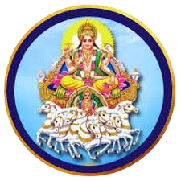

Sun (Surya)
Associated with ego, sense of purpose, vitality, and authority.
Son of Aditi and Kashyapa; Surya means “the supreme light.”

Associated with ego, sense of purpose, vitality, and authority.
Son of Aditi and Kashyapa; Surya means “the supreme light.”
Governs emotions, mind, intuition, and nurturing qualities.
Chandra means “shining” and reflects our inner emotional world.
Represents courage, drive, discipline, and physical strength.
Also connected to conflict, competition, and taking bold action.
Planet of communication, intellect, learning, and adaptability.
Linked to speech, trade, writing, and analytical thinking.
Spiritual teacher and guide of the Devas (gods).
Guru means “teacher”; Brihaspati means “lord of prayer and devotion.”
Associated with wisdom, dharma, blessings, and expansion.
Mentor of the Asuras (demons) and significator of love, beauty, and art.
Shukra means “clear, pure, brightness,” and is linked to luxury, romance,
creativity, and enjoyment.
Planet of karma, discipline, and justice—delivers results of one’s actions.
Associated with hard work, patience, responsibility, wisdom, and life lessons,
but also delays and challenges.
A shadow planet representing worldly desires, ambition, obsession, and confusion.
Rahu pushes toward material experiences and can create both breakthroughs and illusions.
A shadow planet connected to past-life karma, spirituality, and detachment.
Ketu can bring deep inner insight, mysticism, and a desire for liberation (moksha).